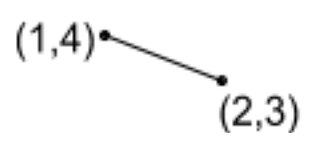
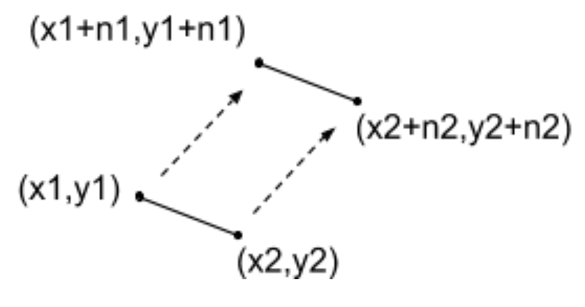

Tema 6: Tipos de datos estructurados: Registros¶
1. Registros¶
Los tipos de datos compuestos o estructurados, son tipos compuestos por otros tipos. Vimos que habían dos tipos:
- Array: Está compuesto por elementos del mismo tipo. Por ejemplo, un array de enteros, todos sus elementos son enteros.
- Registro o estructura: Está compuesto por elementos heterogéneos, pueden tener distintos tipos.
Definición
Un registro es un tipo de datos que permite agrupar bajo un mismo nombre elementos del mismo o de distinto tipo de datos, que se encuentran relacionados entre sí.
Cada elemento se denomina campo o miembro de la estructura. Un registro permite encapsular entidades donde cada campo representa los atributos o propiedades de dicha entidad.
Caraterísticas:
- Un registro o estructura es la manera que tenemos de encapsular variables de diferentes tipos bajo una única entidad: nos referimos a ellos con un identificador único.
- Tienen la peculiaridad de que las variables que forman parte del registro estarán alineadas en memoria: eficiencia
- En un registro se agrupan atributos de una entidad
- Cada uno de los elementos de un registro se denomina campo. Para referirse a un determinado elemento de un registro se deberá utilizar el identificador del registro, seguido de un punto ‘.’ y del identificador del campo correspondiente
Persona:
- Nombre
- Apellidos
- NIF
- edad
- género
Dirección:
- Calle
- Número
- CP
- Población
- Provincia
Cliente:
- NumCliente
- Persona
- Dirección
- Empresa
Diferencias respecto a los arrays:
- Los elementos de un array son todos del mismo tipo, en una estructura no.
- En un array se selecciona un elemento por su posición dentro del array, en una estructura cada elemento tiene su identificador
1.1 Definición de un registro¶
La sintaxis es:
1 2 3 4 5 | struct nombreRegistro {
tipo-campo1 nombre-campo1
tipo-campo2 nombre-campo2
...
};
|
Pueden utilizarse arrays como campos. Ejemplo:
1 2 3 4 5 6 | struct CD { char titulo[20]; char artista[25]; int num_canciones; float precio; }; |
Sintaxis utilizando typedef:
1 | typedef struct {...} nombreRegistro;
|
Dentro de las llaves escribiremos los campos que va a contener el registro.
1 2 3 4 5 6 7 8 9 10 11 12 13 14 15 16 17 18 | typedef struct { char nombre[20]; char apellidos[30]; char nif[10]; int edad; char genero; } TPersona; int main() { // Declaración de variables de estructuras struct CD cd1; struct CD cd2; // Declaración de variables de estructuras definidas con typedef TPersona persona1; return 0; } |
Uso de los registros
Con un registro se puede trabajar a dos niveles: con el registro completo y con sus campos.
Podemos utilizar la operación de asignación entre registros, pero no la de comparación. Es decir, podemos asignar a una variable de tipo struct el valor de otra del mismo tipo. También es posible pasar un registro como parámetro a una función y que una función devuelva un registro.
En el siguiente ejemplo, asignamos una estructura a otra:
1 | cd1 = cd2; |
Inicialización de registros
Podemos inicializar los registros al definir las variables o dejarlos vacíos para manejarlos más adelante:
1 2 3 4 5 6 7 8 9 10 11 12 13 14 | struct CD cd1 = { "Wish", // album "The Cure", // artista 7, // num_canciones 21.5 // precio }; TPersona persona1 = { // definido con typedef "Pepe", "García", "32112234z", 55, 'V' }; |
1.2 Operadores para manejo de registros¶
El operador .
Para acceder a los campos de una variable de tipo registro utilizamos el operador punto .. Este operador proporciona el camino directo al campo correspondiente. Los datos deben ser del mismo tipo que el tipo declarado para ese campo.
1 2 3 4 5 6 7 | TPersona persona2; strcpy(persona2.nombre, "María"); strcpy(persona2.apellidos, "Sánchez"); strcpy(persona2.nif, "11222433A"); persona2.edad = 25; persona2.genero = 'M'; |
El operador ->
Para acceder a los campos de una variable de tipo puntero (lo veremos en el siguiente tema) a registro utilizamos el operador puntero ->. Este operador indica que en la parte izquierda está la dirección de memoria de un registro, y la parte derecha los campos del mismo.
1 | <puntero_estructura> -> <nombre_campo> = datos; |
Es el caso, por ejemplo, de los registros pasados como parámetro por referencia a una función. La función recibe como argumento la dirección de memoria (puntero) del registro.
1 2 3 4 5 | void rellena (TPersona *p) { strcpy(p->nombre, "Pepe"); strcpy(p->apellidos, "Garcia"); p->edad = 45; } |
1.3 Registros y funciones¶
Paso de registros como parámetros a funciones
-
De forma general:
- Paso por valor cuando se use la información del registro sin modificarlo
- Paso por referencia cuando modifiquemos algún
campo del registro, pasando la dirección de memoria utilizando el operador
&.
-
De forma excepcional, tendremos en cuenta que en algunos casos el tamaño del registro en memoria puede ser elevado, por lo que valoraremos en la implementación cuándo nos conviene pasarlo por valor o por referencia, independientemente de si se modifican o no sus campos.
Funciones que devuelven registros
Vamos a seguir la misma norma que cuando tratamos tipos de datos simples, es decir, cuando sólo se va a devolver un dato (en este caso un registro), se hará a través de return.
1 2 3 4 5 6 7 8 9 10 11 12 13 14 15 16 17 18 19 20 21 22 23 24 25 26 27 28 29 30 31 32 33 34 35 36 37 38 39 40 41 42 43 44 45 46 47 48 49 50 | typedef struct { int x; int y; }TPunto; // prototipos de funciones TPunto leerPunto(); void imprimePunto(TPunto); void swap(TPunto*, TPunto*); int main() { TPunto p1, p2; p1 = leerPunto(); p2 = leerPunto(); imprimePunto(p1); imprimePunto(p2); swap(&p1, &p2); imprimePunto(p1); imprimePunto(p2); return 0; } TPunto leerPunto() { TPunto p; printf("Coordenadas x y del punto:"); scanf("%d %d",&p.x, &p.y); return p; } void imprimePunto(TPunto punto) { printf("[X:%d, Y:%d]\n", punto.x, punto.y); } void swap(TPunto* p1, TPunto* p2) { TPunto aux; aux.x = p1->x; aux.y = p1->y; p1->x = p2->x; p1->y = p2->y; p2->x = aux.x; p2->y = aux.y; } |
La función swaptambién podría hacerse manejando los registros completos en lugar de campo a campo:
1 2 3 4 5 6 7 | void swap(TPunto* p1, TPunto* p2) { TPunto aux; aux = *p1; *p1 = *p2; *p2 = aux; } |
1.4 Estructuras anidadas¶
Un registro puede contener otros registros. Ejemplo:
1 2 3 4 5 6 7 8 9 10 11 12 13 14 15 16 17 18 19 20 21 22 23 24 25 | typedef struct { char nombre[20]; char apellidos[30]; char nif[10]; int edad; char genero; } TPersona; typedef struct{ int codCliente; TPersona datosCliente; char direccion[100]; char nombreEmpresa[50]; } TCliente; int main(){ TCliente cli; cli.codCliente = 4; strcpy(cli.direccion, "Avda Mediterraneo 45"); cli.datosCliente.edad = 30; strcpy(cli.datosCliente.nombre, "Juan"); return 0; } |
1.5 Arrays de registros¶
Podemos definir arrays donde su tipo base sea un registro, es decir, cada elemento del vector es un registro, con memoria reservada para su uso. Ya que en los arrays sólo podemos almacenar diversos valores de un mismo tipo, los arrays de estructuras permiten almacenar diversos valores de diferentes tipos agrupados en registros.
1 2 3 4 5 6 7 | typedef struct { char nombre[50]; float precio; int stock; } TProducto; TProducto vectorProductos[100]; |
Para acceder a los campos de cada uno de los elementos, se recorre el array y se accede a cada elemento como lo hacemos con otros tipos de dato:
1 2 3 | strcpy(vectorProductos[0].nombre, "Libro Programación en C"); vectorProductos[0].precio = 17.5 vectorProductos[0].stock = 4; |
Ejercicio 1¶
Define los tipos de datos necesarios que permitan almacenar los datos de 100 alumnos. De cada alumno se quiere almacenar su nombre, apellidos y dirección. Cada uno tiene 10 asignaturas compuestas de código de la asignatura y nota.
1 2 3 4 5 6 7 8 9 10 11 12 13 14 15 16 17 18 19 20 21 22 23 24 | //En primer lugar definimos las constantes necesarias. #define TAMCAD 45 #define TAMASIG 3 #define NUMASIG 10 #define NUMALU 100 //Definimos las estructuras necesarias //Cada alumno tiene 10 asignaturas compuesto de código de la asignatura y nota typedef struct { char codigoAsignatura[TAMASIG]; float nota; }TAsignatura; //Estructura con la información de los alumnos typedef struct { char nombre[TAMCAD]; char apellidos[TAMCAD]; char direccion[TAMCAD]; TAsignatura asig[NUMASIG]; }TFichaAlumno; //Array que contendrá los datos de todos los alumnos typedef TFichaAlumno TAlumnos [NUMALU]; |
Ejercicio 2¶
Escribe un programa que guarde información de 30 alumnos. De cada alumno leeremos su número de expediente, nombre, fecha de nacimiento, fecha de ingreso y su nota media. El programa debe permitir dar de alta un alumno y mostrar todos los alumnos.
1 2 3 4 5 6 7 8 9 10 11 12 13 14 15 16 17 18 19 20 21 22 23 24 25 26 27 28 29 30 31 32 33 34 35 36 37 38 39 40 41 42 43 44 45 46 47 48 49 50 51 52 53 54 55 56 57 58 59 60 61 62 63 64 65 66 67 68 69 70 71 72 73 74 75 76 77 78 79 80 81 82 83 84 85 86 87 88 89 90 91 92 93 94 95 96 97 98 99 100 101 102 103 104 105 106 107 108 109 110 111 112 113 114 115 116 | #define TAMCAD 45 #define NUMALU 30 typedef struct { int dia; int mes; int anyo; }TFecha; typedef struct { int exp; char nombre[TAMCAD]; TFecha fechaNac; TFecha fechaIng; float notaMedia; }TFichaAlumno; //Array de alumnos typedef TFichaAlumno TAlumnos[NUMALU]; //Prototipos funciones void mostrarFecha(TFecha); void mostrarAlumnos(TAlumnos, int); void darDeAltaAlumno(TAlumnos, int *); void pedirFecha(TFecha *); int pedirOpcion(); int main(){ TAlumnos alumnos; int opcion, numAlumnos; numAlumnos = 0; do{ opcion = pedirOpcion(); switch(opcion){ case 1: if(numAlumnos < NUMALU) darDeAltaAlumno(alumnos, &numAlumnos); else printf("No es posible introducir más alumnos"); break; case 2: mostrarAlumnos(alumnos, numAlumnos); break; case 3: printf("Terminado\n"); break; default: printf("Opción incorrecta\n"); } }while(opcion != 3); return 0; } int pedirOpcion() { int opcion; printf("******Gestión de alumnos******\n"); printf("Opciones disponibles: \n"); printf("1. Dar de alta un alumno\n"); printf("2. Mostrar listado alumnos\n"); printf("3. Salir\n"); printf("Seleccione una opción: "); scanf("%d", &opcion); return opcion; } //Muestra la fecha separada por / void mostrarFecha(TFecha fecha){ printf("%d / %d / %d\n",fecha.dia, fecha.mes,fecha.anyo); } void mostrarAlumnos(TAlumnos alumnos, int numAlumnos) { int i; for(i = 0; i<numAlumnos;i++) { printf("Alumno: %d\n", alumnos[i].exp); printf("Nombre: %s\n", alumnos[i].nombre); printf("Fecha de nacimiento: "); mostrarFecha(alumnos[i].fechaNac); printf("Fecha de ingreso: "); mostrarFecha(alumnos[i].fechaIng); printf("Nota media: %.2f\n", alumnos[i].notaMedia); } } //Solicita la fecha void pedirFecha(TFecha *fecha) { printf("\tIntroduce día:"); scanf("%d", &fecha->dia); printf("\tIntroduce mes: "); scanf("%d", &fecha->mes); printf("\tIntroduce año: "); scanf("%d", &fecha->anyo); } //Solicita los datos de los alumnos void darDeAltaAlumno(TAlumnos alumnos, int *numAlumnos) { int i; i = *numAlumnos; printf("Introduce el número de expediente: "); scanf("%d", &alumnos[i].exp); printf("Introduce el nombre: "); scanf("%s",alumnos[i].nombre); printf("Fecha de nacimiento:\n"); pedirFecha(&alumnos[i].fechaNac); printf("Fecha de ingreso:\n"); pedirFecha(&alumnos[i].fechaIng); printf("Introduce la nota media: "); scanf("%f", &alumnos[i].notaMedia); (*numAlumnos)++; } |
Ejercicio 3¶
Escribe los tipos de datos adecuados para almacenar triángulos. De cada triángulo se quiere guardar los tres puntos de sus vértices, su área y su perímetro. Se pide leer un triángulo por teclado: únicamente se leerán sus tres puntos. Su área y su perímetro se calcularán automáticamente después de la lectura.
1 2 3 4 5 6 7 8 9 10 11 12 13 14 15 16 17 18 19 20 21 22 23 24 25 26 27 28 29 30 31 32 33 34 35 36 37 38 39 40 41 42 43 44 45 46 47 48 49 50 51 52 53 54 55 56 57 58 59 60 61 62 63 64 65 66 67 68 69 | #include <stdio.h> #include <math.h> typedef struct { int x; int y; }TPunto; typedef struct { TPunto p1; TPunto p2; TPunto p3; float area; float perimetro; }TTriangulo; TTriangulo leerTriangulo(); void calculaLados(TTriangulo, float *, float *, float *); void calculaPerimetroYArea(TTriangulo *); int main() { TTriangulo triangulo; triangulo = leerTriangulo(); printf("El perímetro del triángulo es: %.2f\n",triangulo.perimetro); printf("El área del triángulo es: %.2f\n",triangulo.area); return 0; } TTriangulo leerTriangulo() { TTriangulo triangulo; printf("Introduzca las coordenadas del punto 1:\n"); scanf("%d %d",&triangulo.p1.x,&triangulo.p1.y); printf("Introduzca las coordenadas del punto 2:\n"); scanf("%d %d",&triangulo.p2.x,&triangulo.p2.y); printf("Introduzca las coordenadas del punto 3:\n"); scanf("%d %d",&triangulo.p3.x,&triangulo.p3.y); calculaPerimetroYArea(&triangulo); return triangulo; } void calculaPerimetroYArea(TTriangulo *triangulo) { float s, lado1, lado2, lado3; calculaLados(*triangulo, &lado1, &lado2, &lado3); triangulo->perimetro = lado1 + lado2 + lado3; // Fórmula de Herón s = 1.0/2.0 * triangulo->perimetro; triangulo->area = sqrt(s * (s - lado1) * (s - lado2) * (s - lado3)); } void calculaLados(TTriangulo triangulo, float *lado1, float *lado2, float *lado3) { *lado1 = sqrt(pow(triangulo.p1.x - triangulo.p2.x, 2) + pow(triangulo.p1.y - triangulo.p2.y, 2)); *lado2 = sqrt(pow(triangulo.p1.x - triangulo.p3.x, 2) + pow(triangulo.p1.y - triangulo.p3.y, 2)); *lado3 = sqrt(pow(triangulo.p3.x - triangulo.p2.x, 2) + pow(triangulo.p3.y - triangulo.p2.y, 2)); } |
Ejercicios propuestos¶
Ejercicio 1¶
Vamos a partir del ejercicio de los triángulos. Queremos almacenar 10 triángulos y ordenarlos de menor a mayor perímetro. Muéstralos ordenados por pantalla, puedes usar el algoritmo de ordenación que prefieras. Puedes hacer una función que imprima los datos de un triángulo por pantalla.
Ejercicio 2¶
Dados los siguientes tipos de datos:
1 2 3 4 5 6 7 8 9 | typedef struct { int x; int y; }TPunto; typedef struct { TPunto p1; TPunto p2; }TSegmento; |
y una matriz bidimensional de TAMx4 numérica de este estilo. Ejemplo:
1 2 3 4 5 6 | #define TAM 5 int matriz[TAM][4] = {{1,4,2,3}, {2,1,5,4}, {4,4,6,7}, {3,3,7,7}, {1,1,7,8}}; |
-
Implementa la función
convertirque reciba una matrizTAMx4numérica y devuelva un array unidimensional conTAMelementos de tipoTSegmento, donde cada segmento se obtiene de cada una de las filas de la matriz original. Por ejemplo, la primera fila daría lugar al segmento:
-
Queremos trasladar todos los segmentos del array. El punto inicial de cada segmento se trasladará sumándole un valor a sus dos componentes y el punto final lo hará con otro valor, tal y como se muestra en el dibujo. Implementa las funciones necesarias.

Ejercicio 3¶
Dada la definición de los siguientes tipos de datos, constantes y la función main():
1 2 3 4 5 6 7 8 9 10 11 12 13 14 15 16 17 18 19 20 21 22 23 24 25 26 27 28 29 30 31 32 33 | #define TAMCAD 45 #define TAMASIG 3 #define NUMASIG 10 #define NUMALU 100 typedef struct { char codigoAsignatura[TAMASIG]; float nota; }TAsignatura; typedef struct { char nombre[TAMCAD]; char apellidos[TAMCAD]; char direccion[TAMCAD]; TAsignatura asig[NUMASIG]; }TFichaAlumno; typedef TFichaAlumno TAlumnos [NUMALU]; int main() { TAlumnos alumnos; TFichaAlumno fichaAlumno; TAsignatura asignatura; int i, j; RellenaDatos(alumnos); /// Código ejercicio 3a /// Código ejercicio 3b /// Código ejercicio 3d return 0; } |
Responde a las siguientes cuestiones, suponiendo que la función RellenaDatos() ya está definida y se encarga de almacenar en la estructura de datos correspondiente la información de todos los alumnos (un total de NUMALU) y de todas las asignaturas de cada alumno (todos están matriculados del mismo número de asignaturas NUMASIG):
a. Escribe el código que permita mostrar por pantalla los apellidos de todos los alumnos cuyo nombre sea "Carlos" o "Eva". No es necesario que definas una función. Puedes utilizar la función de librería strcmp.
b. Escribe el código que permita actualizar la nota de todas las asignaturas de todos los alumnos con el valor 5.0. No es necesario que definas una función.
c. Define la función con el siguiente prototipo:
1 | float NotaAlumno(TFichaAlumno, char[]); |
que debe devolver la nota del alumno en la asignatura cuyo código se especifica en el segundo argumento. Si el alumno no tiene esa asignatura, la función devolverá -1.0. Puedes utilizar la función de librería strcmp.
d. Escribe el código que permita mostrar por pantalla el nombre, apellidos y la nota de todos los alumnos en la asignatura "P1". Si el alumno no tiene nota en la asignatura, no debe aparecer en el listado. No es necesario que definas una función y puedes declarar alguna nueva variable si lo consideras necesario. Debes utilizar la función del apartado anterior.
Bibliografía¶
- Capítulos 11.1 a 11.7 de "Programación en C, metodología, algoritmos y estructuras de datos", Luis Joyanes, Ignacio Zahonero
Programación 1, Grado de Robótica, curso 2019-20
© Departamento Ciencia de la Computación e Inteligencia Artificial, Universidad de Alicante
Cristina Pomares Puig